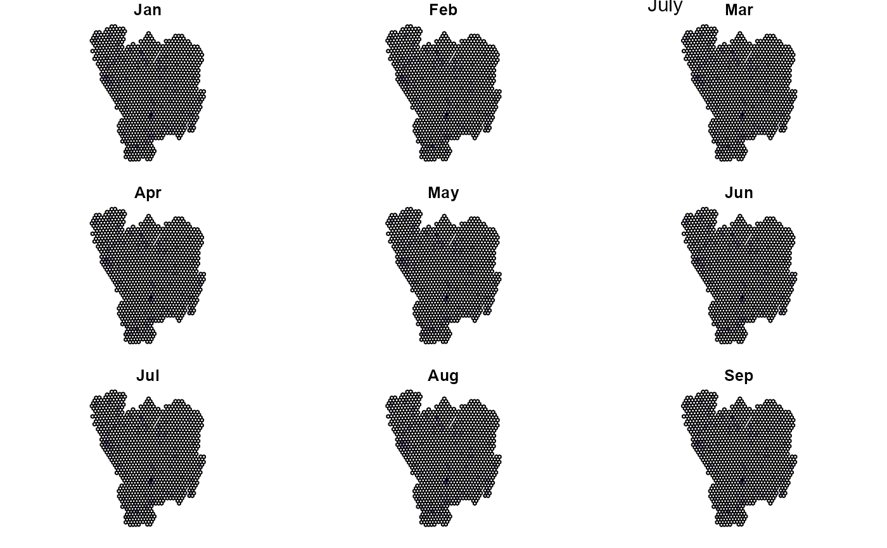
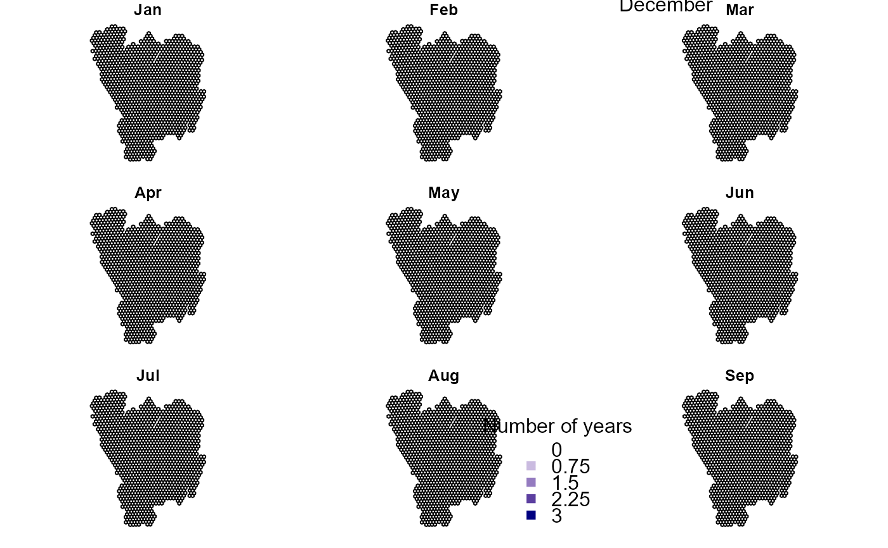

R/BIRDS_pkg.r
BIRDS.RdBIRDS: A set of tools for Biodiversity Information Review and Decision Support.
The primary aim of this package is to provide tools for Biodiversity Informatics in order to understand the specis information data and decide about what analyses we can perform and draw approriate conclusions. For this we need to understand the data generation process. With this R package we want to take the user a step closer to understanding the observers’ behaviour. The BIRDS packages provides a workflow for reproducable data review, involving three basic steps: organise data, summarise data, review data.
# Organise the data OB <- organizeBirds(bryophytaObs, sppCol = "scientificName", simplifySppName = TRUE) OB2 <- organizeBirds(bryophytaObs, sppCol = "species", simplifySppName = FALSE, taxonRankCol = "taxonRank", taxonRank = c("SPECIES", "SUBSPECIES","VARIETY"))#># Make a grid that can be used by summariseBirds() grid <- makeGrid(gotaland, gridSize = 10) # alternatively: # polygon <- rgdal::readOGR(dsn = "yourShape.shp", layer="shapeLayer") # grid <- makeGrid(polygon, gridSize = 10) # Summarise the data (using the grid to overlay with the organised data) SB <- summariseBirds(OB, grid=grid)#>#>EBnObs <- exportBirds(SB, dimension = "temporal", timeRes = "yearly", variable = "nObs", method = "sum") EBnVis <- exportBirds(SB, dimension = "temporal", timeRes = "yearly", variable = "nVis", method = "sum") EBavgSll <- colMeans(SB$spatioTemporal[,,"Yearly","avgSll"], na.rm = TRUE) ## to be implemented in export # \donttest{ EB<-exportBirds(SB, "Spatial", "Month", "nYears", "sum") palBW <- leaflet::colorNumeric(c("white", "navyblue"), c(0, max(EB@data, na.rm = TRUE)), na.color = "transparent") old.par <- par() par(mfrow=c(1,2), mar=c(1,1,1,1)) library(sp) plot(EB, col=palBW(EB@data$Jul)) mtext("July", 3) plot(EB, col=palBW(EB@data$Dec))legend("bottomleft", legend=seq(0, max(EB@data, na.rm = TRUE),length.out = 5), col = palBW(seq(0, max(EB@data, na.rm = TRUE), length.out = 5)), title = "Number of years", pch = 15, bty="n")#>#>#>sp1 <- specaccum(CM) plot(sp1, ci.type="poly", col="blue", lwd=2, ci.lty=0, ci.col="lightblue", xlab="Grid cells")#> Warning: no non-missing arguments to max; returning -Inf#> Error in plot.window(...): need finite 'ylim' values#> [1] 0#> Error in if (S[is] == 0) next: missing value where TRUE/FALSE needed#> Error in if (S[is] == 0) next: missing value where TRUE/FALSE needed# }